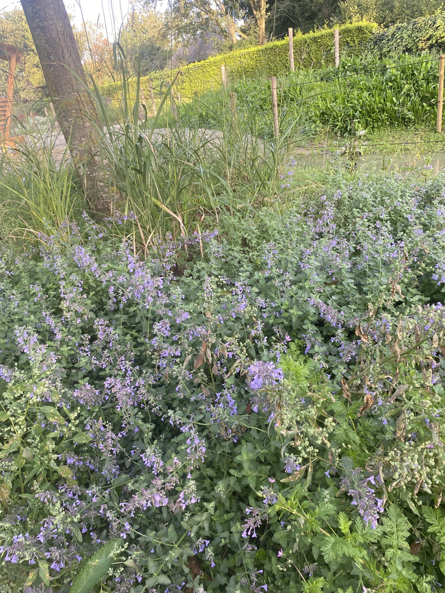
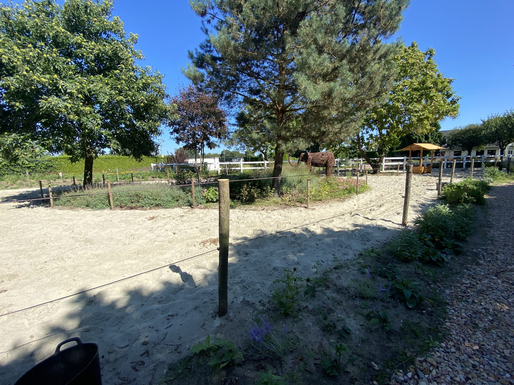

Van tuinontwerp tot volledige aanleg en onderhoud. Wij verzorgen voor elk budget een mooie en duurzame tuin.
Tuinontwerp
Uw ideale tuin begint bij een slim ingericht tuinontwerp. Samen met u nemen we uitgebreid de tijd om uw wensen en ideeën in kaart te brengen zodat er achter de tekentafel een tuinontwerp ontstaat dat precies bij u past.
In dat ontwerp wordt rekening gehouden met verhardingen, een juiste verhouding groen en mogelijke bouwkundige elementen. In de keuze van materialen geven wij duidelijk en helder advies.
Het eerste gesprek is vrijblijvend. U kunt al een tuinontwerp ontvangen vanaf €375,00.
Een beplantingsplan waar goed over nagedacht is betaalt zich op de lange termijn terug. Het gaat niet alleen om kleur en grootte — bepaalde planten hebben een zonnige en droge plek nodig, andere juist een schaduwrijke en vochtige plaats.
Er moet terdege rekening worden gehouden met het feit dat planten elkaar kunnen beconcurreren. Juiste beplanting vraagt veel vakkennis en u voorkomt veel ergernis door u te laten adviseren.
Tuinaanleg
Bij Hoveniersbedrijf Schotman werken enthousiaste vakbekwame hoveniers met ruime ervaring, die persoonlijk uw wensen inventariseren en vervolgens ook zorg dragen voor de aanleg van uw tuin.
Deze mate van betrokkenheid garandeert een perfecte uitvoering waarin niets aan het toeval wordt overgelaten. Wij gebruiken binnen elk budget topkwaliteit planten en bieden u de keuze uit een ruime sortering materialen zoals natuursteen, gebakken materiaal en duurzaam hout.


Tuinonderhoud
Elke tuin heeft met regelmaat aandacht nodig. Het snoeien van bomen en struiken en het wieden van onkruid zijn zaken die niet onderschat moeten worden — voor u het weet verandert uw prachtige tuin in een wilde tuin.
Niet iedereen heeft de tijd of mogelijkheid om zelf de tuin bij te houden. Wij nemen met onze ervaring en kennis het onderhoud graag op ons. Denk daarbij ook aan winterklaar maken, gazononderhoud en bemesting.
Ook het onderhoud van bedrijfsterreinen en openbaar groen nemen wij graag voor onze rekening.
Tuinrenovatie
Hoveniersbedrijf Schotman is ook uiterst deskundig op het gebied van renovatie van bestaande tuinen. Het is van groot belang dat er oog is voor de omgeving en de waardevolle elementen die aanwezig zijn.
Bij renovatie kunt u denken aan het herstellen van een terras, een schutting vervangen of een nieuwe beplanting. Ook uw bestaande tuin herinrichten behoort tot de mogelijkheden.